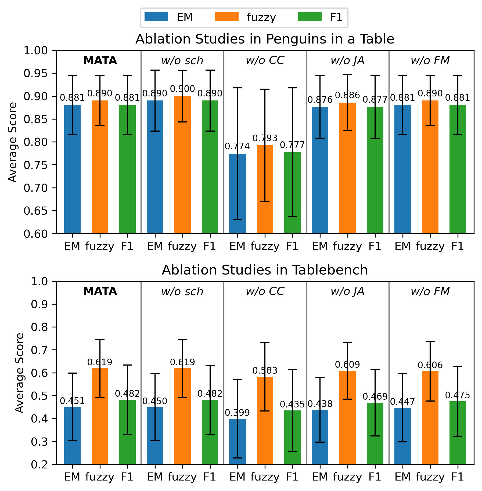

MATA is a multi-agent framework for Table Question Answering that targets reliability, flexibility, and efficiency in practical LLM deployment settings. Instead of depending on one reasoning style, MATA forms candidate answers through complementary Chain-of-Thought, Program-of-Thought, and text-to-SQL paths, then uses lightweight tools and specialized agents to select or refine the final answer.
The framework is designed to avoid unnecessary LLM calls while preserving answer diversity. Experiments on Penguins in a Table and TableBench with ten LLM backbones show that MATA achieves strong accuracy across open-source and proprietary models, with especially large gains on the more challenging TableBench benchmark.
MATA is evaluated with ten LLMs, covering small open-source models below 10B parameters and larger or closed-source models.
The framework combines CoT, PoT, and text-to-SQL so that table questions can benefit from textual, code-based, and SQL-based reasoning.
Scheduler and Confidence Checker modules reduce unnecessary LLM-agent calls while preserving strong answer selection.
Given a table and a question, MATA first runs the CoT Agent and uses the Scheduler to prioritize either the PoT Agent or the text2SQL Agent. If the selected code-based path agrees with the CoT answer, MATA can skip the remaining code-based path; otherwise, it invokes the other path to increase answer diversity.
The system includes three lightweight tools and six LLM-based agents. The tools are the Scheduler, Confidence Checker, and Format Matcher. The agents are the CoT Agent, PoT Agent, text2SQL Agent, Python Debug Agent, SQL Debug Agent, and Judge Agent. The Scheduler uses MobileBERT with a two-layer MLP and has 24.65M parameters; the Confidence Checker is based on DeBERTaV3-large with about 435M parameters; the Format Matcher uses Qwen2.5-Instruct 0.5B without fine-tuning.
MATA is evaluated on two benchmarks with Exact Match, fuzzy matching, and token-level F1. Penguins in a Table represents easier single-table reasoning, while TableBench contains larger and more complex questions across 18 subcategories.
Best baseline average: SynTQA for EM, fuzzy matching, and F1.
Best baseline per metric: SynTQA for EM and F1, MixSC for fuzzy matching.

Figure 2. Ablation results for Confidence Checker, Judge Agent, Format Matcher, and Scheduler modules.
The Confidence Checker is the most important component in the ablation study. It reduces Judge Agent invocations by 95.8% on Penguins in a Table and 60.6% on TableBench while maintaining or improving final accuracy. The Scheduler further reduces LLM-agent calls by 14.6% and 7.6% on the two benchmarks, respectively.
For locally hosted open-source backbones, MATA reports an average end-to-end latency of 27.55 seconds per query, compared with 48.89 seconds for TabLaP and 44.48 seconds for MixSC. SynTQA is faster at 6.86 seconds, but its fixed low-call budget is less effective on the harder TableBench setting.
Table 2. Evaluation results on the Penguins in a Table benchmark. Bold indicates the best performance; underlined scores are the second best.
| Model | TabLaP | SynTQA | MixSC | MATA | |||||||||
|---|---|---|---|---|---|---|---|---|---|---|---|---|---|
| Group | Name | EM | Fuzzy | F1 | EM | Fuzzy | F1 | EM | Fuzzy | F1 | EM | Fuzzy | F1 |
| Small LLM | llama3.2-3b | 0.188 | 0.290 | 0.247 | 0.597 | 0.654 | 0.602 | 0.201 | 0.303 | 0.252 | 0.736 | 0.766 | 0.736 |
| mistral-7b | 0.049 | 0.231 | 0.102 | 0.639 | 0.680 | 0.645 | 0.271 | 0.385 | 0.289 | 0.861 | 0.880 | 0.861 | |
| phi4-mini-3.8b | 0.333 | 0.483 | 0.362 | 0.813 | 0.827 | 0.813 | 0.500 | 0.593 | 0.528 | 0.819 | 0.847 | 0.819 | |
| qwen2.5-3b | 0.396 | 0.479 | 0.400 | 0.694 | 0.737 | 0.694 | 0.438 | 0.517 | 0.442 | 0.868 | 0.883 | 0.868 | |
| qwen2.5-7b | 0.444 | 0.522 | 0.444 | 0.813 | 0.866 | 0.815 | 0.597 | 0.657 | 0.597 | 0.951 | 0.955 | 0.951 | |
| Large LLM | mistral-small-24b | 0.764 | 0.784 | 0.773 | 0.896 | 0.918 | 0.896 | 0.806 | 0.813 | 0.810 | 0.896 | 0.896 | 0.896 |
| cogito-32b | 0.931 | 0.934 | 0.931 | 0.868 | 0.886 | 0.868 | 0.903 | 0.908 | 0.903 | 0.903 | 0.903 | 0.903 | |
| qwen2.5-32b | 0.611 | 0.687 | 0.656 | 0.861 | 0.892 | 0.861 | 0.785 | 0.802 | 0.789 | 0.917 | 0.917 | 0.917 | |
| GPT-4o | 0.653 | 0.655 | 0.653 | 0.951 | 0.961 | 0.951 | 0.833 | 0.835 | 0.833 | 0.903 | 0.903 | 0.903 | |
| Claude-3.7-Sonnet | 0.868 | 0.868 | 0.868 | 0.965 | 0.970 | 0.965 | 0.924 | 0.924 | 0.924 | 0.951 | 0.951 | 0.951 | |
| Average | 0.524 | 0.593 | 0.544 | 0.810 | 0.839 | 0.811 | 0.626 | 0.674 | 0.637 | 0.881 | 0.890 | 0.881 | |
Table 3. Evaluation results on the TableBench benchmark. Bold and underline follow Table 2.
| Model | TabLaP | SynTQA | MixSC | MATA | |||||||||
|---|---|---|---|---|---|---|---|---|---|---|---|---|---|
| Group | Name | EM | Fuzzy | F1 | EM | Fuzzy | F1 | EM | Fuzzy | F1 | EM | Fuzzy | F1 |
| Small LLM | llama3.2-3b | 0.067 | 0.357 | 0.130 | 0.089 | 0.231 | 0.120 | 0.081 | 0.372 | 0.144 | 0.354 | 0.563 | 0.381 |
| mistral-7b | 0.036 | 0.331 | 0.119 | 0.227 | 0.367 | 0.270 | 0.082 | 0.355 | 0.151 | 0.294 | 0.473 | 0.321 | |
| phi4-mini-3.8b | 0.056 | 0.334 | 0.126 | 0.202 | 0.366 | 0.253 | 0.144 | 0.411 | 0.203 | 0.273 | 0.457 | 0.295 | |
| qwen2.5-3b | 0.163 | 0.417 | 0.195 | 0.208 | 0.364 | 0.245 | 0.163 | 0.417 | 0.197 | 0.291 | 0.471 | 0.317 | |
| qwen2.5-7b | 0.079 | 0.255 | 0.094 | 0.302 | 0.450 | 0.336 | 0.169 | 0.368 | 0.190 | 0.354 | 0.557 | 0.393 | |
| Large LLM | mistral-small-24b | 0.322 | 0.478 | 0.352 | 0.391 | 0.543 | 0.431 | 0.378 | 0.530 | 0.410 | 0.573 | 0.724 | 0.606 |
| cogito-32b | 0.440 | 0.614 | 0.483 | 0.443 | 0.591 | 0.481 | 0.430 | 0.614 | 0.476 | 0.577 | 0.723 | 0.609 | |
| qwen2.5-32b | 0.268 | 0.533 | 0.317 | 0.398 | 0.553 | 0.436 | 0.297 | 0.551 | 0.341 | 0.577 | 0.721 | 0.607 | |
| GPT-4o | 0.556 | 0.722 | 0.595 | 0.476 | 0.607 | 0.503 | 0.494 | 0.692 | 0.540 | 0.595 | 0.740 | 0.629 | |
| Claude-3.7-Sonnet | 0.612 | 0.763 | 0.655 | 0.489 | 0.633 | 0.540 | 0.619 | 0.767 | 0.659 | 0.620 | 0.764 | 0.664 | |
| Average | 0.260 | 0.480 | 0.307 | 0.322 | 0.471 | 0.362 | 0.286 | 0.508 | 0.331 | 0.451 | 0.619 | 0.482 | |
@misc{hyeon2026mata,
title={MATA: Multi-Agent Framework for Reliable and Flexible Table Question Answering},
author={Sieun Hyeon and Jusang Oh and Sunghwan Steve Cho and Jaeyoung Do},
year={2026},
eprint={2602.09642},
archivePrefix={arXiv},
primaryClass={cs.CL},
url={https://arxiv.org/abs/2602.09642},
}